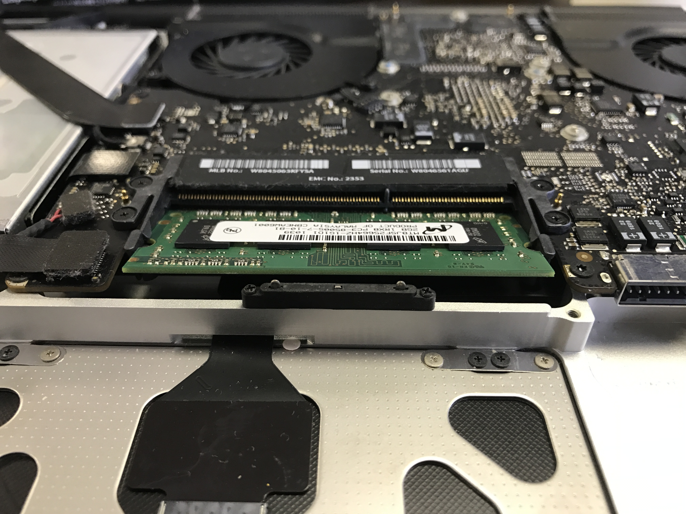
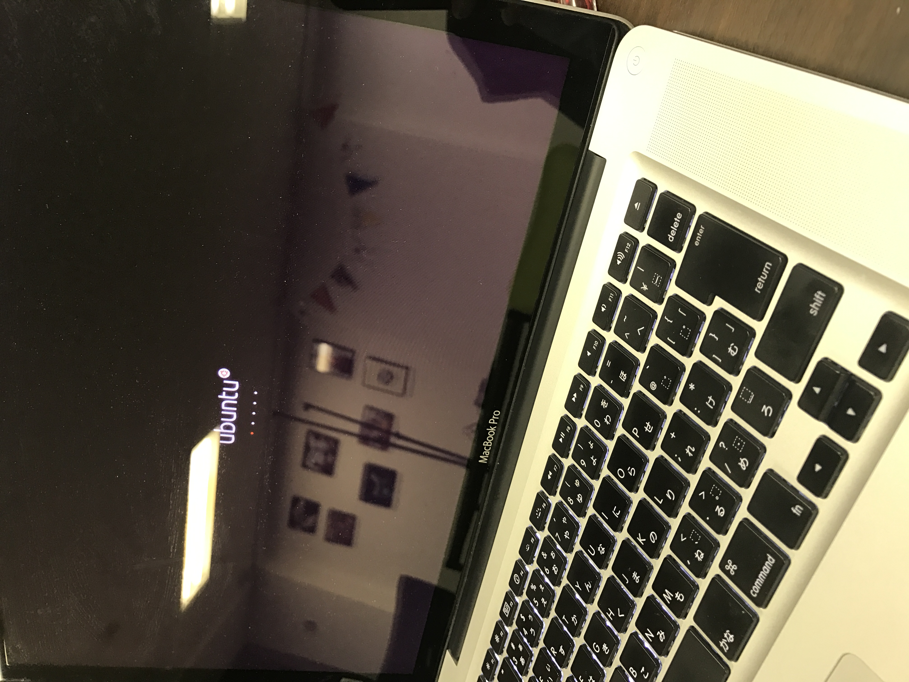
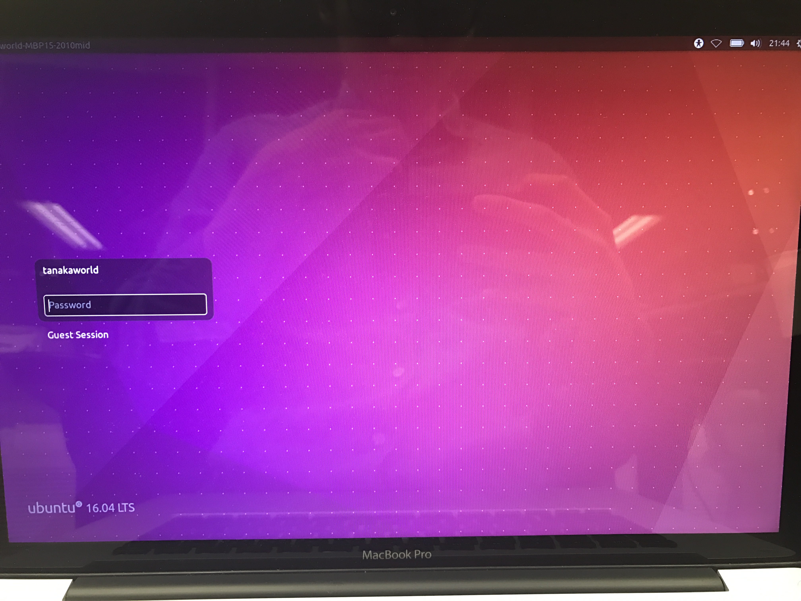

MacBookProのバッテリー/メモリ/HDDをセルフ交換し，Ubuntuをデュアルブートする
古いMacのバッテリーが膨張してしまっていたため，バッテリーを交換した．
ついでにパワーアップ(メモリを増設＋HDD→SSD)，さらに機械学習用 Mac とするべく Ubuntu を入れてみた．
MacBookPro 2012 mid 15 inch #開封の儀 昔使ってたMacが机にまっすぐ置けないと思ったら、バッテリーが膨張してたorz 開封ついでにメモリ増設とHDD→SSDもやるやつ。 pic.twitter.com/fprl1XQYYi
— tanaka.world ™ (@_tanakaworld) April 14, 2017
工具
必要な工具やパーツは Amazon で購入した．
アネックス(ANEX) ESD精密ドライバー +00×50 No.3450-ESD
← Macの蓋をあけるのに必要
アネックス(ANEX) T型ヘクスローブドライバー T6×50 No.6300
← HDD を止めてるネジやバッテリーを外すのに必要
バッテリー/SSD/メモリ
バッテリーWorldPlus バッテリー Apple MacBook Pro 15 インチ 対応 A1382 A1286 ( 2011 2012 ) 6200mAh
SLODA交換用バッテリーApple用Macbook Pro 15” A1321 A1286 (Mid 2009 Early 2010 Late 2010) に适用MacBook Pro 15 A1321 ノートPCバッテリー [リチウムポリマー，10.95V, 7200mAh]
誤って型違い用を購入してしまったので返品し代わりを書い直した．
完全に MacBookPro 2012 mid 15 inch だと思ってたらもっと前のだった．
型番によってバッテリーの接続口の形が異なるので，Appleの公式のサイトから型番を確認しようorz
SSD
Crucial [Micron製] 内蔵SSD 2.5インチ MX300 525GB ( 3D TLC NAND /SATA 6Gbps /3年保証 )国内正規品 CT525MX300SSD1/JP
メモリ
シリコンパワー ノートPC用メモリ DDR3 1600 PC3-12800 8GB×2枚 204Pin Mac 対応 永久保証 SP016GBSTU160N22
デフォルトだと 2GB x 2 = 4GB しか積まれていなかったので，8GB x 2 = 16GB にアップグレードする．

バッテリー+メモリ交換
それぞれ交換して起動するも，Apple マークでフリーズする．
カーネルパニックが発生してるっぽい．
セーフモードで起動し直してみると，起動時に画面が虹色にグラデーションした．
その後デスクトップが表示されるが、その後自動で再起動されてしまう．
メモリとバッテリーを同時に交換してしまったので、問題切り分けのためにメモリを一旦元に戻す．
バッテリー交換
バッテリー交換は完了．
バッテリーだけ交換した場合，正常起動したので，メモリが問題とわかった．
メモリ交換

何をやってもカーネルパニックが解決できず．
メモリに関しては後回しにすることにした．

Macのメモリ交換したんだが、一向に起動しない… pic.twitter.com/Z5wkQCmNV6
— tanaka.world ™ (@_tanakaworld) April 18, 2017
参考
- NVRAMをリセットすると解決する説
- 老兵は死なず！MacBook Pro Mid 2010 復活計画発動！【調査編】
- MacBook，MacBook Pro 13, Mac mini Mid 2010 が16GB（8GBｘ2）に対応！
- MacBookPro Mid2010でメモリ16GBに増設できました。
- MacMacBook Pro (15-inch, Mid 2010)で16GB(8GB×2)メモリは使えるか
HDD を SSD に交換
SSDに交換して起動したところ，Disk Unitility で Uninitialized になっていた．
SSDもフォーマットする必要がありそう．
次の手順でフォーマットした．
※ HDDのデータは完全に消えてもOKだったので，データ移行はしていない．
- Disk Unitility > SSD を選択
- Format: Mac OS Extended (Journaled)
- Type: GUID Partition Map
- Clean up
- Internet Recovery で最新のOSをDL&インストール
- 完了

参考
- Disk Utility for macOS Sierra: Erase a volume using Disk Utility
- Mac で新しい SSD を使用する際に「このコンピュータで読み取れないディスクでした」と表示された場合のフォーマットの方法
UbuntuとOS Xをデュアルブートする
ブートローダー rEFInd を使って，OS X と Ubuntu を切り替えられるようにする．
Ubuntu用のパーティションを設定
- macOS Utilities
- Disk Utility
- 既存のHDDを初期化（選択してErase）
- Reinstall Mac OS
- Partition Dividing (Ubuntu専用マシンにするので，OS X: 20GB / Ubuntu: 480GB の構成にした）
- Application > Utilities > DiskUtility
rEFInd インストール
OS X は起動し
- rEFInd から
A binary zip fileをDL - SIP対策のため，リカバリーモードで起動 (⌘+Rしながら，電源ボタンを押す)
- OSX Utility > Utility > Terminal を起動
- DLしたディレクトリ内に移動し
refind-install.shを実行1
2cd /Volumes/path/to/binary-dir
./refind-install.sh - Macを再起動
起動確認
- Escを押しながらMacを起動
- rEFIndの画面が表示されたらOK
参考
- MacにブートローダrEFIndを導入してみる
- Mac OS SierraのPCで、Ubuntu16.04をデュアルブートした時のまとめ
- OS X YosemiteとUbuntu 14.04.2 LTSのデュアルブート環境を構築する
Ubuntu 起動


まとめ
- 先人の知恵のおかげでなんとか Ubuntu 起動までこぎつけた（感謝）
- Ubuntuとして起動時は，メモリ 8GB x 2 でも動いた
- Macとして起動する場合は 2GB x 2 に戻さないとカーネルパニックが発生（Ubuntu入れた時点で Mac として起動する機会はほぼないので，まぁ問題はない）
- 最近の Mac は基盤とバッテリーやメモリが癒着していてツラい．できれば自分でカスタマイズしたいところ．
元々入っていたHDDは外付けHDDとして再利用もしてみたい（参考：既存のHDDを外付けとして使う)- 外付けHDDにしてみた．